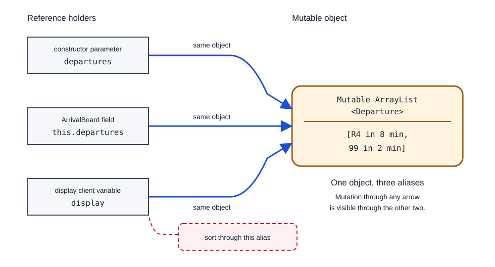

Mutability, Aliasing, and Debugging
Something there is that doesn't love a wall.
Robert Frost, “Mending Wall”
The arrival-board specification requires the board to preserve feed order. A display client wants the same departures sorted by waiting time, so it does this:
List<Departure> display = board.upcoming();
display.sort(Comparator.comparingInt(Departure::minutesUntilArrival));The display looks right. Later, a different client asks the board for feed order and receives the sorted order instead. No method on ArrivalBoard reordered the data. Both clients received a reference to the same mutable list, so sorting through one reference changed the state observed through the other.
To diagnose this class of failure, we need to distinguish variables from objects, reassignment from mutation, and a copy of a container from a copy of everything reachable through it. We will then use that model in a disciplined debugging process.
By the end of this chapter
- draw references, objects, and aliases in an instance diagram;
- predict the difference between reassigning a variable and mutating an object;
- explain why
final, records, and unmodifiable views do not automatically make an object graph immutable; - identify representation exposure through arguments and return values;
- choose among immutability, confinement, defensive copying, and unmodifiable snapshots;
- debug by reproducing a failure, testing hypotheses, repairing the cause, and adding a regression test.
4.1Variables Hold Values; Reference Values Designate Objects
For a Java primitive variable, assignment copies the primitive value:
int scheduled = 600;
int predicted = scheduled;
predicted = 607;After the last line, scheduled is still 600. The two variables are separate cells, and storing a new value in one cell does not change the other.
For a variable of reference type, assignment copies a reference value:
List<String> feedOrder = new ArrayList<>(List.of("R4", "99"));
List<String> displayOrder = feedOrder;
displayOrder.add("14");There is still one ArrayList. Both variables designate it, so adding through displayOrder is visible through feedOrder. Two references to the same object are aliases.
Java's language specification does not expose a raw memory address through an ordinary reference, so we should not reason in terms of addresses. The property we need is weaker: a reference designates an object, and two reference values may designate the same object.
4.2Draw the References
An instance diagram records one runtime state. We draw variables or fields as labelled cells, objects as containers, primitive values inside their cells, and references as arrows to objects (Figure 4.1).

The diagram is not a description of physical memory, because a Java Virtual Machine (JVM) may arrange or optimise storage in many ways. The diagram records only the relationships that Java makes observable: which variables reach which objects, and where a mutation becomes visible.
When a stateful failure is difficult to explain, draw the state before and after the suspicious operation. The diagram makes aliases and visible mutations explicit.
4.3Reassignment Is Not Mutation
These operations change different parts of the diagram:
displayOrder = new ArrayList<>(); // reassign the variable
feedOrder.add("14"); // mutate the existing objectReassignment changes which value a variable holds. In the diagram, its arrow moves to another object. Other aliases remain attached to the original object.
Mutation changes the state of an existing object. The arrows stay in place, so every alias can observe the new state.
Method-call syntax can obscure this distinction:
String label = "R4";
label.toLowerCase();
StringBuilder message = new StringBuilder("R4");
message.append(" delayed");String is immutable; toLowerCase returns a string and the ignored result is lost. StringBuilder is mutable; append changes the existing builder. Syntax alone does not tell us whether a call mutates. The type's specification does.
Guarantees of final
final prevents a variable or field from being assigned again:
final List<String> routes = new ArrayList<>();
routes.add("R4"); // allowed: object mutation
// routes = new ArrayList<>(); // does not compile: reassignmentThe arrow cannot move, but the object at its end may still change. Declaring the reference final therefore says nothing about whether the object is immutable.
This distinction matters in almost every Java class. Declaring a collection field final guarantees that the field continues to designate the same collection. It does not guarantee that the collection keeps the same elements.
4.4Identify Representation Exposure
The following ArrivalBoard exposes its representation:
public final class ArrivalBoard {
private final List<Departure> departures;
public ArrivalBoard(List<Departure> departures) {
this.departures = departures;
}
public List<Departure> upcoming() {
return departures;
}
}The representation is the private state used to implement the object; here, it is the list designated by departures. The private modifier prevents a client from naming the field directly, but the constructor stores the client's reference and upcoming returns that same reference. Both operations expose the private list.
This is representation exposure. A client gains a reference through which it can mutate an object's internal representation without using the object's specified operations.
The exposure has two directions.
Incoming exposure
The constructor retains an alias supplied by the client:
List<Departure> source = new ArrayList<>(departures);
ArrivalBoard board = new ArrivalBoard(source);
source.clear(); // also clears the broken boardEven if upcoming never existed, the board would remain vulnerable through source.
Outgoing exposure
The observer returns the internal alias:
board.upcoming().clear(); // clears the broken board directlyA correct repair must eliminate both forms of exposure.
4.5Create an Unmodifiable Snapshot
For this representation, we use Java's List.copyOf:
package ca.ubc.ece.cpen221.transit;
import java.util.List;
import java.util.Objects;
public final class ArrivalBoard {
private final List<Departure> departures;
public ArrivalBoard(List<Departure> departures) {
Objects.requireNonNull(departures, "departures");
this.departures = List.copyOf(departures);
}
public List<Departure> upcoming() {
return departures;
}
}List.copyOf returns an unmodifiable list containing the source collection's elements in iteration order. Later structural changes to the source collection do not appear in the returned list. It also rejects null collections and elements, which matches the transit system's public-method convention.
We can safely return the field because clients cannot add, remove, sort, or replace elements in that list. A client that calls sort receives UnsupportedOperationException; the board remains unchanged.
Copying again on every call to upcoming is another valid design. Returning one immutable snapshot avoids repeated allocation and is safe because the shared object cannot be mutated through its public interface. Immutability can make sharing cheaper than defensive copying at every boundary.
Check the element types
List.copyOf makes an unmodifiable copy of the list structure. It does not recursively copy each element. Our element type is:
package ca.ubc.ece.cpen221.transit;
import java.util.Objects;
public record Departure(StopId stopId, String routeName,
int minutesUntilArrival) {
public Departure {
Objects.requireNonNull(stopId, "stopId");
Objects.requireNonNull(routeName, "routeName");
if (routeName.isBlank()) {
throw new IllegalArgumentException("route name must not be blank");
}
if (minutesUntilArrival < 0) {
throw new IllegalArgumentException(
"minutes until arrival must be non-negative");
}
}
}Departure is immutable because its components are immutable values and its methods do not mutate them. The list and every element can therefore be shared safely.
If Departure contained a mutable List<String> component, then the record's final field would protect only the component reference. A client could still mutate the list. Records provide final component fields, but they do not make mutable component objects immutable.
4.6Snapshot, View, Shallow Copy, Deep Copy
These four terms name different guarantees, and a design usually needs exactly one of them.
A shallow copy creates a new outer object and copies references to its elements. List.copyOf is shallow with respect to element objects. It is sufficient when those elements are immutable or otherwise safe to share.
A deep copy recursively creates independent copies of mutable reachable objects. "Recursively" needs a defined boundary: real object graphs may contain cycles, shared subgraphs, operating-system resources, or objects with no meaningful copy. The designer must define what to copy and how to handle shared or non-copyable objects.
An unmodifiable view blocks mutation through one reference while reflecting changes made through another reference to its backing collection. For example, Collections.unmodifiableList(source) does not detach from source.
An unmodifiable snapshot such as the result we obtain from List.copyOf(source) does not reflect later structural changes to source. That is the property our board needs.
Neither “unmodifiable” nor “copied” guarantees deep immutability. Ask two questions separately:
- Can this reference modify the container?
- Can any reachable reference modify an element or a backing object?
The first question covers the list itself. The second covers the mutations that remain possible through the elements or through a backing collection, which is where an unmodifiable view differs from a snapshot.
4.7Debug Representation Exposure
Suppose the feed-order test fails only after the display code runs. Sorting the list again inside upcoming would address that observation while leaving every client able to mutate the board.
Use a repeatable process.
Reproduce
Reduce the report to a small automated test:
@Test
void clientCannotReorderBoard() {
ArrivalBoard board = new ArrivalBoard(List.of(
new Departure(new StopId("A"), "R4", 8),
new Departure(new StopId("B"), "99", 2)));
assertThrows(UnsupportedOperationException.class,
() -> board.upcoming().sort(
Comparator.comparingInt(Departure::minutesUntilArrival)));
assertEquals(List.of("R4", "99"),
board.upcoming().stream().map(Departure::routeName).toList());
}The test records two obligations: upcoming rejects a mutation attempt, and the board retains feed order. The test uses only in-memory values, so it provides focused feedback after each hypothesis.
Study the evidence
Observe the list before and after the client call. Inspect reference identity in a debugger if it helps, but do not stop at “the list changed.” Draw the instance diagram and ask which references reach the changed object.
Form a hypothesis
One hypothesis is: upcoming returns the representation list. It predicts that a mutation through the returned reference changes the board and that both references designate the same object.
Run a discriminating experiment
Replace the return expression temporarily with new ArrayList<>(departures). If outgoing mutation no longer changes the board, then the experiment supports the hypothesis about the getter. Then test incoming exposure by retaining and mutating the constructor argument. That second experiment reveals whether the repair is complete.
Repair the cause
Choose a representation whose sharing policy matches the specification. Here, copying at construction and retaining an unmodifiable list removes both mutable alias paths. The repair is a design change, not a compensating sort.
Preserve the failure as a regression test
Run the focused test, then the whole suite. Keep the minimal reproducer so a later refactor cannot expose the representation again. Contradictory evidence requires a revised hypothesis rather than a speculative repair (Figure 4.2).

4.8Confine Mutable State
Debugging technique matters, but design determines the size of the search.
- Keep mutable objects local when one method can own the entire mutation.
- Minimise variable scope so fewer statements can reassign or use a reference.
- Avoid global mutable state; it gives distant code an invisible communication channel.
- Use immutable application values when sharing is common.
- State permitted mutation in specifications.
- Fail near violated assumptions instead of carrying damaged state forward.
These practices confine change. A mutable local ArrayList used to assemble an immutable result is often an effective design: mutation is efficient, its owner is clear, and no reference to the list leaves the method. "Prefer immutability" does not prohibit every call to add; it asks us to keep the boundary of mutation small and deliberate.
Design principle: minimise the number of paths by which mutable state can be reached.
When sharing is required, choose an explicit policy: immutable value, owner-confined mutation, unmodifiable snapshot, or carefully specified shared mutation. Do not let the sharing policy emerge accidentally from copied references.
4.9Common Misconceptions
“The field is private and final, so the class is immutable”
private controls which code may name the field. final prevents reassignment of that field. Neither prevents mutation of the referenced object, and neither stops the class from leaking another reference to it.
Immutability is a property of the complete observable object state and every path by which that state can change.
“I copied the list, so there are no aliases”
A shallow list copy removes the alias to the outer list and preserves the aliases to its elements. That is safe for immutable Departure values and unsafe for mutable element objects unless the contract controls their mutation.
Draw one more level of references and check whether a client can mutate an element.
4.10Review Generated Classes with Mutable State
Generated getters often return a field directly, because the code is compact and the field's declared type already matches the return type. Review every constructor and observer of a state-holding class with a reference checklist:
- Identify every mutable argument retained by the constructor.
- Identify every mutable field or reachable element returned by a method.
- Determine whether the collection elements are immutable.
- Determine whether
finalprotects only a reference. - Classify each unmodifiable result as a detached snapshot or a live view.
- Check whether the specification permits the sharing created by the implementation.
Ask the generator to explain ownership if useful, but verify the explanation against the code and tests. An instance diagram provides a concrete account of which objects each client can reach.
Try the References
Draw before running
Draw the variables and objects after these statements:
List<String> a = new ArrayList<>(List.of("R4"));
List<String> b = a;
List<String> c = new ArrayList<>(a);
b.add("99");
c.add("14");Predict the contents observed through a, b, and c. Explain each result by following an arrow.
Separate final from immutable
For each operation, say whether it reassigns a reference or mutates an object, and whether final prevents it:
final List<String> routes = new ArrayList<>();
routes.add("R4");
routes.clear();
// routes = List.of("99");Reopen the representation
Replace immutable Departure with a class whose route name can change. Does the fixed ArrivalBoard remain immutable? Show the alias path and propose two different repairs with different costs.
Compare a view and a snapshot
Predict what each observer sees after source.add("14"):
List<String> source = new ArrayList<>(List.of("R4", "99"));
List<String> view = Collections.unmodifiableList(source);
List<String> snapshot = List.copyOf(source);
source.add("14");Which object is suitable for preserving the state at construction time?
Debug the cause
A test reports that a board becomes empty after a client runs. Write one hypothesis about incoming exposure and one about outgoing exposure. For each, design an experiment whose result could contradict the hypothesis.
Summary
Reference assignment can create aliases: separate variables that designate one object. Reassignment moves one reference; mutation changes an object visible through every alias. final prevents the first operation, not the second.
Representation exposure occurs when a class retains or returns a mutable alias to its internal state. We repaired ArrivalBoard with an unmodifiable snapshot and immutable elements. Shallow copies, deep copies, views, and snapshots provide different guarantees; name the one the design actually needs.
When a state-related failure appears, reproduce it, study the evidence, form a falsifiable hypothesis, run a discriminating experiment, repair the cause, and preserve the failure as a regression test. Confining mutation reduces the number of operations and aliases that developers must examine when such a failure occurs.
We now have a feedback loop, meaningful types, explicit contracts and failure paths, and controlled mutable state. The next chapter uses these tools to define abstract data types whose clients can depend on behaviour without depending on representation.
References
- Robert Frost, “Mending Wall”
- Java Language Specification, Java Platform, Standard Edition (Java SE) 25: values and types
List.copyOfand unmodifiable lists in Java SE 25- Java SE 25 guide to unmodifiable collections
- Java SE 25 record classes
- John Regehr, How to Debug
Java examples for this reading →